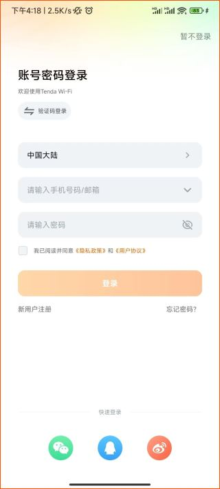
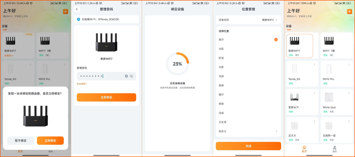

Tenda WiFi App 快问快答——装之前把这些搞明白
家里换了腾达路由器想远程管理？Tenda WiFi App 是官方配套工具，注册、绑路由、改 Wi-Fi、拉黑蹭网访客网络这一篇全问全答。
整理一篇关于 Tenda WiFi App 的快问快答，都是实际用的时候会撞上的问题。
Tenda WiFi App 是个什么东西
腾达路由器tendawifi app官网配套的官方管理工具，手机上装一个就能替代电脑登后台。功能覆盖日常运维的大部分场景：查看在线设备、改 Wi-Fi 名称密码、开关访客网络、拉黑蹭网设备、设家长控制，也支持远程管理——在单位也能看家里路由器状态。不是腾达自家路由器的话装了也绑不上，这一点得先说清楚。
谁需要装
腾达路由器新用户第一次配置必装，老用户想远程管理、搞访客网络或拉黑蹭网的也建议装。如果家里路由器一直用默认配置没出过问题，那确实也用不上——但只要遇到过"是不是有人蹭我网"这种疑问，装一个两分钟就能排查。
怎么装怎么注册
可以从官方下载或者应用商店搜「Tenda WiFi」就能下，iOS 和安卓都有。首次打开会引导注册，流程很简单：填手机号、收验证码、设密码，就完成了。一个账号可以绑定多台路由器，也能把路由器授权给家人共同管理。收不到验证码的时候先检查是不是被短信拦截了，或者换个网络环境再试。

路由器怎么绑定
打开 App 后点「添加路由器」，手机连上要绑定的路由器 Wi-Fi，App 会自动发现并弹出绑定确认。需要输入路由器的管理员密码（不是 Wi-Fi 密码，是路由器后台登录密码）。绑定成功后这台路由器就归你管了，远程状态下也能看到。如果绑定失败，先确认手机确实连的是目标路由器的 Wi-Fi，不是邻居家的。

改 Wi-Fi 名称和密码在哪里
进入路由器详情页，最显眼的那块就是 Wi-Fi 信息区，直接点进去改。改完保存的时候注意——所有已连接的设备会立即断网，得提前通知家里人。如果开了双频合一，2.4G 和 5G 共用一个名称；分开设的话建议给 5G 加个 _5G 后缀，方便手动选。密码至少 8 位，别用生日手机号这种容易猜到的组合。
访客网络到底怎么用
访客网络是给临时来家里的客人用的独立 Wi-Fi，和主网络隔离，客人连不上你局域网里的其他设备。默认名称是主 Wi-Fi 名加 _Guest 后缀，有自己独立的密码，分享的时候要把访客网络的名称和密码一起给，别搞混。可以设置有效期（比如 6 小时自动关闭），用完就关，安全又省心。有效期到了会自动关闭，这是设计如此，忘了解冻就得手动去 App 再开一次。访客网络的更多参数和进阶配置可以去tendawifi app文档翻一下。
发现蹭网的怎么拉黑
进 App 看终端设备列表，陌生设备一般有几个特征：完全不认识的手机型号、奇怪的 MAC 地址、频繁在线离线切换，而且大概率在 2.4GHz 频段。找到可疑设备点进详情页，里面有拉黑按钮，确认一下就踢出去了。被拉黑的设备下次还能搜到 Wi-Fi 信号，但输入密码就是连不上，用户自己会以为是密码改了或者路由器出问题。要是拉黑错了（比如家里人换新手机了），去「访问控制」或「黑白名单」里解除就行。
访客网络连不上怎么办
先排三件事：主网络自己能不能上网？App 里访客网络开关是不是真打开了？设了有效期的话是不是过期自动关了？这三个最常见，排除了再往下查。主 Wi-Fi 如果开了隐藏 SSID，访客网络也可能跟着隐藏，客人搜不到。连得上但没网，检查一下有没有设了访问权限限制，临时关掉试试。实在搞不定可以先重启访客网络（App 里关掉等 10 秒再开），还不行就重启路由器。
有什么坑要注意
改 Wi-Fi 密码所有设备会一起断网，务必提前通知。隐藏 SSID 会让一些老设备（智能家电、游戏机）手动连接困难。WPS 功能建议关掉，PIN 码容易被暴力破解。同一手机号短时间多次获取验证码会触发限流，注册的时候别狂点。
值不值得长期用
如果你家里是腾达路由器，装一个 Tenda WiFi App 是省心的选择——改配置不用再找电脑、蹭网排查两分钟搞定、访客网络随开随关，这些功能都比登后台方便。如果一直用默认配置没出过问题，那确实也用不上，但装上也不占多少空间，遇到问题的时候能省不少折腾。相关资料我同步维护在GitHub、Gitee和GitCode，国内访问哪个快就用哪个。